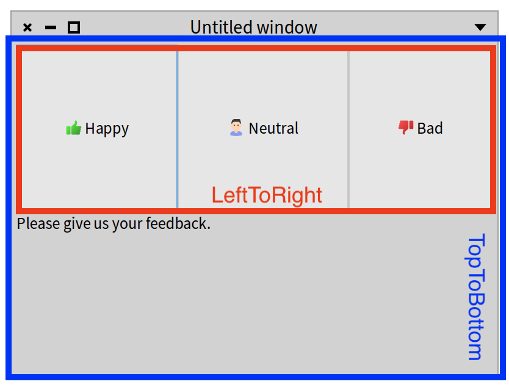

4 Spec core in a nutshell
Spec is Pharo's user interface framework. It provides the building blocks for constructing UIs, from simple windows to complex tools like browsers and debuggers. With Spec, developers can capture the layout and the interactions between the elements that compose a UI. For example, a developer can express that a tool has two components: a list on the left and a component displaying information on the right. Clicking on an item in the list will display detailed information about the selected item. In addition, Spec supports the reuse of the UI interaction logic.
Spec is the foundation of most tools in Pharo, such as the inspector, Spotter, the Pharo debugger, Iceberg, etc. In this short chapter, we place the key architectural elements of Spec in context.
4.1 Spec architecture overview
Figure 4.1 presents the general architecture of Spec. Basically, Spec is built around 5 concepts that we will describe in subsequent sections. The most important concepts are presenter, layout, and application.
A presenter represents the UI element logic and it is also the connection with the domain. The Application is also a place to be in contact with domain objects but generally, it handles application-specific resources (icons, windows,…).
Based on presenters and layouts, Spec builds the actual UI. Internally, it uses adapters that are specific to each widget and per backend. This way presenters are agnostic about backends and are reusable across them.
4.2 Spec core architecture overview
Spec core is composed of the following elements:
- Application. An application is composed of multiple presenters and a stylesheet.
- Presenters. A presenter is a unit of interactive behavior. It is connected to domain objects and other presenters. Its visual representation is defined via at least one layout.
- Layout. A layout describes the positions of elements and it can be recursive.
- Stylesheet and styles. A stylesheet is composed of styles that describe visual properties such as fonts, colors, …
We detail each of the main elements.
4.3 Presenters
A Spec presenter (an instance of a SpPresenter subclass), is an essential part of the Spec framework. It represents the logic of a UI element. It can define the behavior of a simple UI widget such as a button, as well as of a complex UI widget composed by many other presenters (either simple or complex). To build your user interface, you compose presenters.
Spec already comes with a predefined set of basic presenters (widgets) ready to use in your presenters. You can find them in the 'scripting - widgets' protocol of the SpPresenter class. You will find buttons, labels, checkboxes, text input, drop lists, lists, menus, tables, trees, toolbars, action bars, but also more complex widgets like code diff presenters and notebooks. You can easily instantiate a new presenter and display it:
SpButtonPresenter new
label: 'ok';
openA presenter may also have a model that is a domain object you need to interact with to display or update data. In this case, your presenter class should inherit from SpPresenterWithModel so that the presenter keeps a reference to the domain object and updates when the model changes (see Chapter 6).
A presenter defines layouts. One is mandatory. If you want to display a presenter with the default layout, you can use the open or openDialog methods.
The former will open a new window with the presenter while the latter will open a blocking dialog with the presenter.
You can use openWithLayout: or openDialogWithLayout: to open the presenter with the layout you will provide as an argument.
4.4 Application
A Spec application (an instance of the SpApplication class hierarchy) handles your application initialization, configuration, and resources. SpApplication is not a presenter because it does not have a graphical representation. An instance of SpApplication defines your application (keeping the backend, theme, icons, and other graphical resources), and keeps the opened windows that belong to the application, but it is not shown itself.
A Spec application also provides a way to access windows or resources such as icons, and provides abstractions for interactions with the user (inform, error, file, or directory selection).
Finally, an application provides the style used by Spec to style UI elements. A default style is available, but you can customize it as shown in Chapter 15.
You should also define a method to tell what is the main window / presenter to use when running the application.
Here we specialize the method start as follows:
MyApplication >> start
(MyMainPresenter newApplication: self) openYou can run your application with MyApplication new run. It will call the start method you defined.
4.5 Application configuration
In the application initialization, you can configure the backend you want to use: Morphic (default) or GTK. In the future, Spec will also support Toplo, a new widget library built on top of Bloc. It will replace Morphic.
Using Morphic
Here is an example using the Film application from Chapter 3. We define a configuration as a subclass of SpMorphicConfiguration.
SpMorphicConfiguration << #ImdbMorphicConfiguration
package: 'CodeOfSpec20Book'Then we define the method configure: as follows:
ImdbMorphicConfiguration >> configure: anApplication
super configure: anApplication.
"There are ways to write/read this from strings or files,
but this is how you do it programatically."
self styleSheet
addClass: 'header' with: [ :style |
style
addPropertyFontWith: [ :font | font bold: true ];
addPropertyDrawWith: [ :draw | draw color: Color red ] ]Note that we could use a style described in a string as shown Chapter 15.
Finally, in the corresponding application class, we declare that the Morphic backend should use our configuration using the message useBackend:with:.
ImdbApp >> initialize
super initialize.
self useBackend: #Morphic with: ImdbMorphicConfiguration newUsing GTK theme and settings
For GTK the process is similar, we define a subclass of SpGTKConfiguration.
SpGTKConfiguration << #ImdbGTKConfiguration
package: 'CodeOfSpec20Book'Then we configure it by selecting and extending CSS.
ImdbGTKConfiguration >> configure: anApplication
super configure: anApplication.
"This will choose the theme 'Sierra-dark' if it is available"
self installTheme: 'Sierra-dark'.
"This will add a 'provider' (a stylesheet)"
self addCSSProviderFromString: '.header {color: red; font-weight: bold}'And in the application initialization, we declare that the configuration should be used for GTK.
ImdbApp >> initialize
super initialize.
self useBackend: #GTK with: ImdbGTKConfiguration new4.6 Layouts
To display its elements, a presenter uses a layout. A layout describes how elements are placed on the display surface. To help you build nice user interfaces, several layouts are available:
- GridLayout: Choose this layout when you need to create a presenter with a label, and fields that need to be aligned (form style). You can specify in which box of the grid you want to place an element.
- BoxLayout: a
SpBoxLayoutarranges presenters in a box, vertically (top to bottom) or horizontally (left to right). - PanedLayout: a
SpPanedLayoutis a layout with two elements called "panes" and a splitter in between. The user can drag the splitter to resize the panes. - TabLayout: a
SpTabLayoutshows all its elements as tabs. You can select a tab to display the content. - MillerLayout: a layout to implement miller columns, also known as cascading lists (https://en.wikipedia.org/wiki/Miller\_columns).
Any layout in Spec is dynamic and composable. In general, a layout is defined at the presenter instance level, but it can be defined on the class side.
Defining a layout is as simple as defining the defaultLayout method. This method is automatically invoked if a layout is not manually set.
Let's revisit the defaultLayout method from Chapter 2.
CustomerSatisfactionPresenter >> defaultLayout
^ SpBoxLayout newTopToBottom
add: (SpBoxLayout newLeftToRight
add: buttonHappy;
add: buttonNeutral;
add: buttonBad;
yourself);
add: result;
yourselfThe method defines two box layouts:
- one containing the three buttons
- one containing the first one and a result text below.
Each of the layouts refers to accessible subpresenters (buttonHappy, buttonNeutral, buttonBad, result) from the presenter. Figure 4.3 shows the corresponding result.
defaultLayout method.
4.7 Styles and stylesheets
A Spec application always comes with a default stylesheet. A stylesheet contains style definitions that can be applied to presenters. Chapter 15 presents styles in detail.
A style is a property container to “style” components, and defines (to a certain degree) its behavior within the different layouts.
Here is an example of a stylesheet for the Morphic backend:
'.application [
.lightGreen [ Draw { #color: #B3E6B5 } ],
.lightBlue [ Draw { #color: #lightBlue } ] ]'The styles in Spec format are similar to CSS but expressed in STON. Pay attention not to forget the leading periods.
You can apply it on your Spec application by sending the styleSheet: message to an application:
myStyleSheet := SpStyleVariableSTONReader fromString:
'.application [
Font { #bold: true },
.bgBlack [ Draw { #backgroundColor: #black } ],
.blue [ Draw { #color: #blue } ]
]'
application styleSheet: SpStyle defaultStyleSheet, myStyleSheet.Then you can style a presenter using the message addStyle: (think about a tag with a class in CSS) as follows:
presenter label: 'I am a label'.
presenter addStyle: 'blue'.4.8 Navigation between presenters
Once the definition of your UI components (i.e., your Spec presenters and layouts) is done, you will need to define the behavior of the UI: what happens when you open a new presenter?
You will probably want to provide some data (a model) to the presenter so that it can be used to display data. It is called a transmission: you transmit data from one presenter to another presenter. Transmissions are defined as reactions to events.
It is quite easy to define the behavior of the UI by using widget-predefined events. You can find them in the api-events protocol of the presenter classes. Most used events are whenSelectionChangedDo:, whenModelChangedDo:, whenTextChangedDo:. Here are some examples:
messageList
whenSelectionChangedDo: [ :selection |
messageDetail model: selection selectedItem ];
whenModelChangedDo: [ self updateTitle ].
textModel whenSubmitDo: [ :text | self accept: text ].
addButton action: [ self addDirectory ].
filterInput whenTextChangedDo: [ :text | self refreshTable ].4.9 Conclusion
Class SpPresenter is a central class that has the following responsibilities:
- Initialization of presenter part and state.
- Definition of application layout.
- Connection of the elements to support the interaction flow.
- Update of the UI components.
We will illustrate these points in the following chapters.